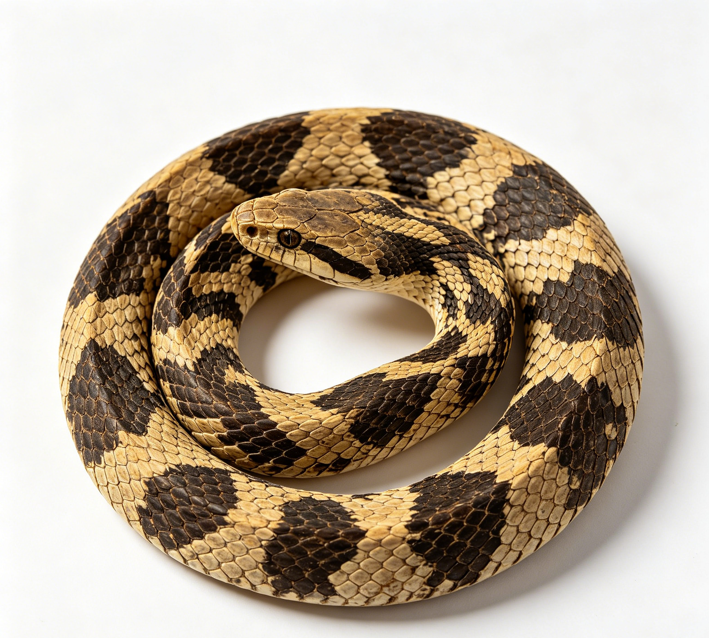

📋 基本信息
中文名蝮蛇
拉丁名Agkistrodon halys
英文名Agkistrodon Halys
产地科：蝰科（Viperidae，蝮亚科Crotalinae）；属：蝮属（Agkistrodon，现多分为亚洲蝮属Gloydius）；拉丁学名：Agkistrodon halys (Pallas)。分布于我国北部、中部，主产于内蒙古、辽宁、吉林、黑龙江、山西、河北等省区，浙江、江西等地亦产。
性状本品呈长扁条形，中部宽1～1.5cm。头部略呈方圆柱形，近颈部连接处有人字形的突起，头背部有大形对称的鳞片，有时眼后两侧有白色细纹，口张开时，上方有白色的毒牙。背鳞起棱，体背色斑变化较大，一般呈交互排列的黑褐色圆形或波状的横斑纹；腹部剖开面两侧向内微卷，中间有明显的点状椎骨突起。尾部短小。气腥，味微咸。以条大、头尾齐全、花纹斑块明显、内壁洁净者为佳。【《浙江省中药材标准》（2017年版）第一册】
用法用量内服：研末，每次1～3g；或入丸、散；或浸酒饮。外用适量，焙炭研末调敷。【《中药大辞典》等工具书记载，标准正文未明确者以此补充】
贮藏置阴凉干燥处，防霉，防蛀。【参照同类动物药材贮藏要求】
☯ 传统属性
四气温
五味甘、咸
归经肝、肾经
功能主治补益肝肾，祛风。用于肝肾不足，腰膝酸痛，眩晕乏力，体虚。【《浙江省中药材标准》（2017年版）第一册】
禁忌症本品有小毒，孕妇禁用；儿童慎用；过敏体质者慎用；有出血倾向者慎用（其蛇毒成分具抗凝血活性）；不可捕捉活蛇自行食用，须经规范加工炮制。【《浙江省中药材标准》及相关文献】
毒性规范加工的干燥蝮蛇按常用量服用一般安全。炮制不当（未除净内脏、未充分干燥）可能残留毒性成分；偶见过敏反应（皮疹、瘙痒、胃肠不适），蛇类蛋白为潜在致敏原；过量服用可致恶心、头晕等不适；因蛇毒成分具抗凝活性，大量服用或与抗凝药物同用可能增加出血风险。
适宜体质血瘀质
适宜证型血瘀证、气滞血瘀证
🔬 现代研究
主要成分蝮蛇干燥体主要含蛋白质及多种氨基酸、胆甾醇、牛磺酸、脂肪及脂质类等成分。蝮蛇蛇毒中含蛋白水解酶、磷脂酶A2、类凝血酶（蝮蛇酶）、出血毒素等毒性蛋白和多肽；经去内脏、烘干炮制后的药材中蛇毒含量极少。由蝮蛇毒提取的蝮蛇抗栓酶（类凝血酶）已开发为药品，具有去纤、抗凝、改善微循环作用。
药理作用现代研究表明，蝮蛇（干燥体）具有抗应激、抗炎、抗胃溃疡、降血脂、增强免疫功能、抗疲劳等药理作用，与其传统“补益肝肾、强壮”功效相符。其蛇毒来源的蝮蛇酶（类凝血酶/抗栓酶）具有降低纤维蛋白原、抗血栓形成、改善血液流变学和微循环的作用，曾用于脑血栓等心脑血管疾病的辅助治疗；蛇毒中其他成分尚有镇痛、抗肿瘤等研究报道。药用干燥体与蛇毒制剂的作用强度有本质区别，不可混淆。
食疗功效民间传统以蝮蛇为滋补强壮、恢复疲劳、祛风除湿之品。常制成蛇粉冲服或配人参、枸杞等浸酒（蝮蛇酒），用于气血不足、肝肾亏虚之乏力、头晕、腰膝酸痛、关节肌肉疼痛麻木；日本称其为“反鼻”，作强壮剂使用。其食疗定位偏于温补肝肾、祛风通络，而非药典蕲蛇之“祛风通络止痉”主治风湿顽痹。
食养禁忌
🏭 产品形态与潜在功能
推荐形态
粉末胶囊提取物
潜在功能